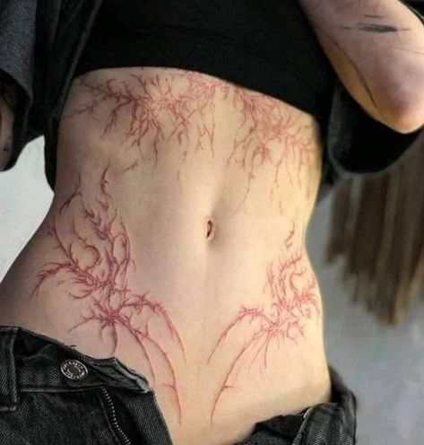
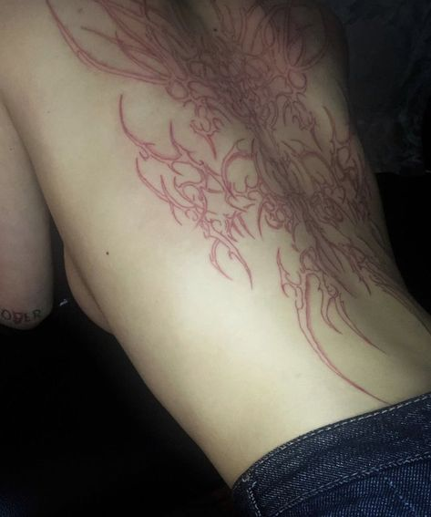
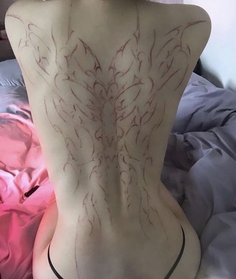
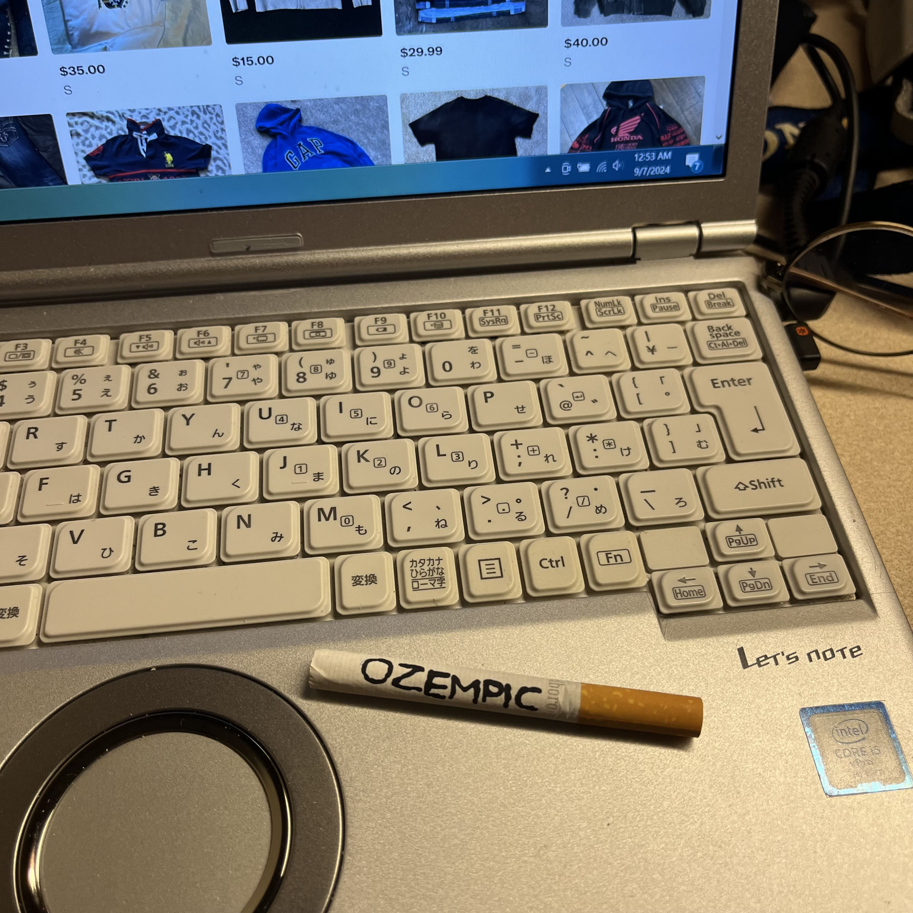
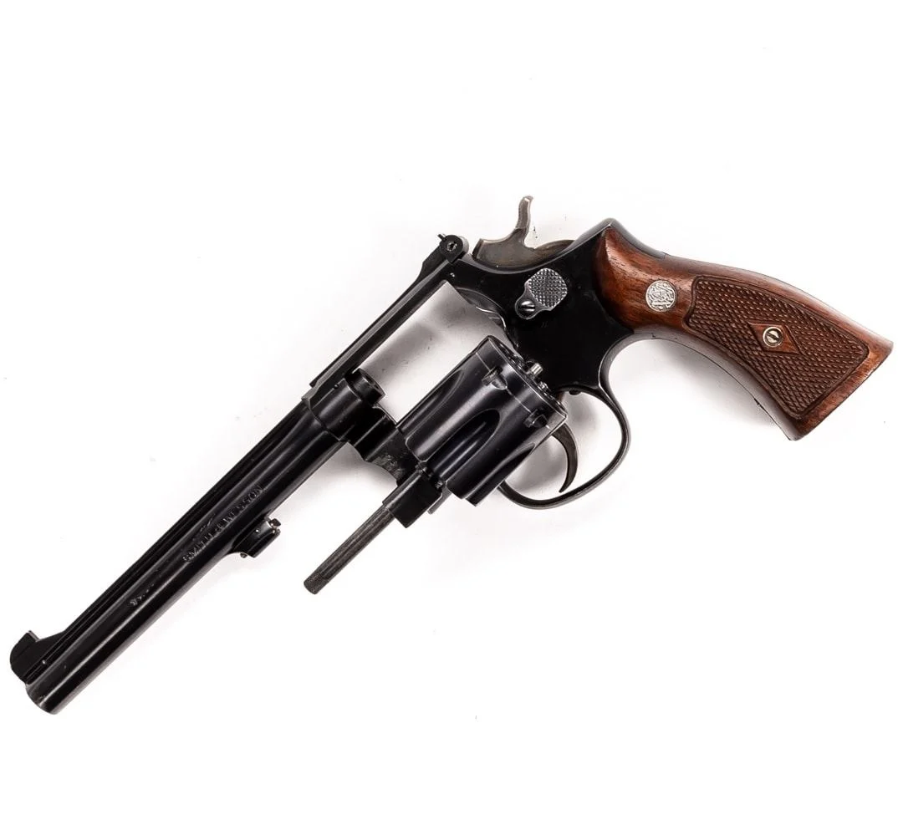
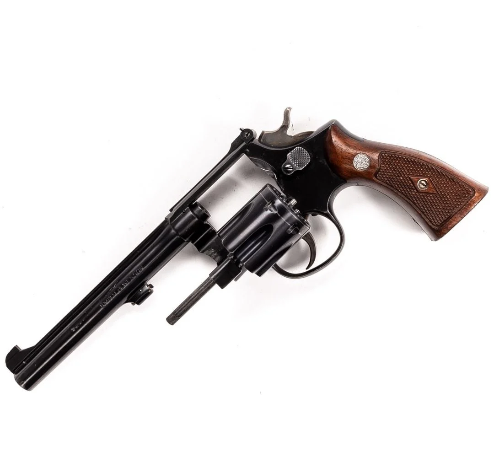

faceless fvck (teaser)
sep 27
update: creation
sep 7
recently, i've been wanting to make something new. new outfits, new programming projects, videos, sm. i want stuff i can remember!
so i've been trying to make as much as i can. i finally finished the moments before college documentary and also made a little be your lover music video inspired by crystal castles' "baptism" (just the green screen stuff really) — speaking of which, i've been trying to get into more techno/electronic music.
i always liked techno and electronic and i've listened to some rave-type sounding music for a long time but now i want to look for a new genre of music that i can use to define myself ig. in my playlist rn i have some old songs from the midnight club LA tracklist and also some new UK-garage songs and russian hardbass ;). throw back !!!! im trying to find more of that type of music but i literally have no clue where to look. i don't want to lose meaning again like i feel like i did for a whole year.
i also want to get back into programming video games. the opengl demo "choks3d" i made earlier this year is a good base, but i dropped off when i started delving into clustered lighting. this time, i'm trying to make something more interactable, like a quake-like shooter. every day i understand the backend side of game dev and low level game dev especially in terms of how i should handle collisions. lighting i THINK i might be at a level of designing myself.

another new thing i did was i starting setting up my youtube for livestreaming again. and to test, i got the bright idea of streaming myself watching funny videos during lectures and it was just the funniest fucking shit ever. nick recorded a clip and i think it might end up somewhere on some channel but idk !!
also on youtube i've been finding a couple channels i really fw aesthetically!! vewn uploaded a new vid n honestly she is so... mother. i also saw another guntuber channel that had a video titled "my best american girl" and it was so cool but it just threw me back to that time of that hs senior relationship. just so sad. also i felt like i was being replaced !! i want to be cooler. i must be better. i miss my guns :(
i want my om arm tattoo and i want a wispy cunty tattoo still fuckkkk. and im considering growing my hair now :sob: ok i just consulted my roommates as of today september 7th im growing my hair out!!! HOORAY !!!



oh also i made a pretty girl smile and laugh today because we worked together to press an elevator button !! they make u swipe ur card first and her floor was about to pass so. she was cute.when i drank last weekend (labor day weekend) i didn't eat well. my diet was as follows:
- 1 (one) bowl of cocoa krispies cereal w/ milk
- 2 (two) 40 oz malt liquor (one colt 45, one steel reserve)
- and 2 (two) drunk cigarettes!!!!
hmm what else... i shot guns at the pistol club and schoolwork at college is actually starting to get really tough ://// arghhh. when i grow my hair out again and begin to look pretty again i want a girlfriend. a best friend. i actually want to be loved !! i want her to be really cool and nice to me and i wanna be actually friends with her so we get along and can hang out :sob: is it so much to ask for ? my ex was so fucking mean to me but ig it's what i deserve.
i bought my fleece for my slavic tracksuit fit so i can look like the villain from behind enemy lines (and niko bellic) but this update post is getting a little too long so i will make a photo dump in the next month and post more later !! expect game dev content plz :3 maybe guns in october ? and better outfits too !!! i will be better.
i will live.

drunk walk home ?
aug 26
since the last time i wrote, i slept through a class for the the first time, i went to my first party, got drunk for the first time, missed some of my first college assignments....
uh what else ? i got tased for the first time too by some girl! didn't feel like anything tbh.
ever since that party, i haven't been feeling so bad about college. but at the same time the school week hasn't started just yet (it's 12:39 am). i think the endless rut just had me feeling bad. i don't know though, cuz being sad is kind of cool. and because i'm happy now, i don't feel like i'm as intriguing as a person LOL.
i had a great fucking time though. alcohol feels great. and they played songs i loved (no hands by waka flocka flame and superfreak by young jeezy). it was an engineering frat party, so it was all white boys. not my kind of crowd, but the music was good and i was hanging out with my suitemates and just letting go. i love dancing and singing sm. it's fun sober, it's better drunk.
and yeah i had a drunk walk home :p // i had 4.5 beers btw before alex (redhead suitemate) confiscated it cuz i was fucking it up tm on da dance floor. record !!!!!! (i think im a lightweight)
i bought myself a new secondary laptop as well to experiment with and just play around with. it's super cute.

it's a japan-market only laptop which design hasn't changed since 2003 or something. it has a dvd drive and plenty of io and looks soo cool. it matches my camera!!
i've also been spending more time on pinterest and looking at all the cool cigs i wanna collect. i really want SevenStars rn. it's got such a cool design !!!

i wish i had a bad ass cougar bitch to buy me cigs and a revolver and buy me a cunty tattoo (after my om tattoo ofc). i would really like a feminine-ish tattoo and a few religious ones. i feel like that fits me. something with thin wispy designs or cursive or something.
speaking of guns, i am now a member of the OSU pistol club!!! i got a pin and everything. im gonna become a boss at shooting pistols, and ofc when i'm home i'll also have an sks. also i didn't think i said, but i bought a cool adidas tracksuit !!! when it gets colder, expect to see pictures of me in it !!! but here is the pin on my camo jacket.


and also..... my closet as it stands rn (without my pistol pin). just to show how my room looks rn. (btw a guy dropped out so its only 2 in the suite now)
overall !!! : i'm excited for cold weather and to shoot. during the student involvement fair i went to today i also joined the nepali club (has very pretty girl) and saw stuff like jiujitsu, some vehicle building clubs, and medieval fighting!! so at least it's not all just my dumbass classes.
i still could use a cigarette.. i wish i had been able to try a drunk cig ughhhh.

uh what else ? i got tased for the first time too by some girl! didn't feel like anything tbh.
ever since that party, i haven't been feeling so bad about college. but at the same time the school week hasn't started just yet (it's 12:39 am). i think the endless rut just had me feeling bad. i don't know though, cuz being sad is kind of cool. and because i'm happy now, i don't feel like i'm as intriguing as a person LOL.
i had a great fucking time though. alcohol feels great. and they played songs i loved (no hands by waka flocka flame and superfreak by young jeezy). it was an engineering frat party, so it was all white boys. not my kind of crowd, but the music was good and i was hanging out with my suitemates and just letting go. i love dancing and singing sm. it's fun sober, it's better drunk.
and yeah i had a drunk walk home :p // i had 4.5 beers btw before alex (redhead suitemate) confiscated it cuz i was fucking it up tm on da dance floor. record !!!!!! (i think im a lightweight)
i bought myself a new secondary laptop as well to experiment with and just play around with. it's super cute.
it's a japan-market only laptop which design hasn't changed since 2003 or something. it has a dvd drive and plenty of io and looks soo cool. it matches my camera!!
i've also been spending more time on pinterest and looking at all the cool cigs i wanna collect. i really want SevenStars rn. it's got such a cool design !!!

i wish i had a bad ass cougar bitch to buy me cigs and a revolver and buy me a cunty tattoo (after my om tattoo ofc). i would really like a feminine-ish tattoo and a few religious ones. i feel like that fits me. something with thin wispy designs or cursive or something.
speaking of guns, i am now a member of the OSU pistol club!!! i got a pin and everything. im gonna become a boss at shooting pistols, and ofc when i'm home i'll also have an sks. also i didn't think i said, but i bought a cool adidas tracksuit !!! when it gets colder, expect to see pictures of me in it !!! but here is the pin on my camo jacket.
and also..... my closet as it stands rn (without my pistol pin). just to show how my room looks rn. (btw a guy dropped out so its only 2 in the suite now)
overall !!! : i'm excited for cold weather and to shoot. during the student involvement fair i went to today i also joined the nepali club (has very pretty girl) and saw stuff like jiujitsu, some vehicle building clubs, and medieval fighting!! so at least it's not all just my dumbass classes.
i still could use a cigarette.. i wish i had been able to try a drunk cig ughhhh.
loserhood
aug 22
i believe that some people are just born to lose. i think i am too. my dad always used to joke that i was born a crybaby and stuff like that --
not that i think he meant it seriously, but i think it just is true. that somehow i am destined to fall last, naturally. be unlucky, make all the
wrong choices. i think of people i've hurt with my actions.
i think mr booz is a good example of that. i dislike him and find him ugly even to mention in my writings but i cannot help but to think we are somehow the same in spite of our rivalry. it's just one of those god's irony things. that's why i empathize with him. he is a dying man and i see myself in him.
college makes me feel like shit. i don't like it here. it's not like i would be any better off in virginia. i'm equally purposeless here nor there. i think i've been so used to some bullshit going on in my life constantly i don't have a concept of self-fulfilling happiness when there isn't some (usually woman-related) calamity just around the corner.
it's only been a couple days of classes and i'm bored out of my mind. i can't focus in these stupid ass lecture halls with 150 people in them. for the time being ALL my classes are more or less review of stuff i did in high school or stuff i already know like introductory C++.
hopefully there's gonna be something to do on the weekend. sm busywork. life seems so boring and monotonous.
equally related to loserhood is ugliness. i don't feel good about the way i look. i feel like i'm third class in everything. at least i'm myself, right?
i need be more creative. i need to work out more. i need to work more w/ godot like i wanted to. i need to blog consistently. i need to edit my video.
and damn i need a cigarette.
")
i think mr booz is a good example of that. i dislike him and find him ugly even to mention in my writings but i cannot help but to think we are somehow the same in spite of our rivalry. it's just one of those god's irony things. that's why i empathize with him. he is a dying man and i see myself in him.
college makes me feel like shit. i don't like it here. it's not like i would be any better off in virginia. i'm equally purposeless here nor there. i think i've been so used to some bullshit going on in my life constantly i don't have a concept of self-fulfilling happiness when there isn't some (usually woman-related) calamity just around the corner.
it's only been a couple days of classes and i'm bored out of my mind. i can't focus in these stupid ass lecture halls with 150 people in them. for the time being ALL my classes are more or less review of stuff i did in high school or stuff i already know like introductory C++.
hopefully there's gonna be something to do on the weekend. sm busywork. life seems so boring and monotonous.
equally related to loserhood is ugliness. i don't feel good about the way i look. i feel like i'm third class in everything. at least i'm myself, right?
i need be more creative. i need to work out more. i need to work more w/ godot like i wanted to. i need to blog consistently. i need to edit my video.
and damn i need a cigarette.
classes begin tomorrow!!!
aug 19
yesterday i was feeling feverish and it was just the absolute fucking worst. i'm all alone and i have no food, and i don't have anybody to care for me.
it was such a hassle just to get food and i was so so depressed. but i'm all better now. i'm glad i knew how to take care of myself !!
 it's not like i have a somebody to love me in virginia, i just want a girlfriend again. i don't think i'm over the last one at all, but still. it would be nice to have a friend to tell me
what to do and what to wear and to dress up and go out with. also i like being in the presence of a pretty woman.
it makes me very happy.
it's not like i have a somebody to love me in virginia, i just want a girlfriend again. i don't think i'm over the last one at all, but still. it would be nice to have a friend to tell me
what to do and what to wear and to dress up and go out with. also i like being in the presence of a pretty woman.
it makes me very happy.
classes start tomorrow but i already have an exam lined up!! i am gonna study really hard today and tomorrow and hopefully dress well too. catch some pretty lady's eyes. i have laundry and hair to cut etc etc etc. im so busy :sob:
also i wanna get some more time to play resident evil (REmake) and go to the army/navy store, which opens on the 21st. the last time i went it was closed.
i wonder how that girl ashley pak is doing... i ALSO think she is really pretty and cool but she's a year younger than me and idk which school she goes to now. i wish i had become friends with her.
but it's time for work.
i want somebody to buy vivienne westwood for

there is a very pretty chinese girl on my floor in morrill. she is tall and elegant looking. like a swan. has a nice face and applies makeup very nicely. maybe they'd suit her?classes start tomorrow but i already have an exam lined up!! i am gonna study really hard today and tomorrow and hopefully dress well too. catch some pretty lady's eyes. i have laundry and hair to cut etc etc etc. im so busy :sob:
also i wanna get some more time to play resident evil (REmake) and go to the army/navy store, which opens on the 21st. the last time i went it was closed.
i wonder how that girl ashley pak is doing... i ALSO think she is really pretty and cool but she's a year younger than me and idk which school she goes to now. i wish i had become friends with her.
but it's time for work.
first few days of the midwest in pictures
aug 17


the night before i left for college (vlog)
aug 13